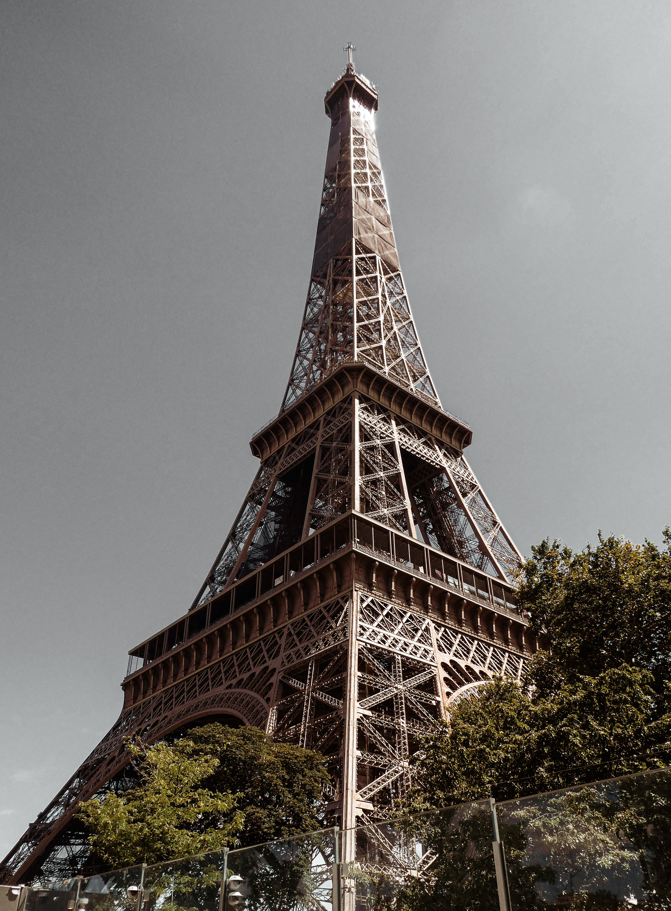

Construite à l’occasion de l’exposition universelle de 1889, la tour Eiffel est sans conteste le symbole de Paris. Haute de 324 m, elle surplombe la ville depuis le Champ-de-Mars et émerveille les visiteurs depuis des générations. Scintillante de nuit, équipée d’une patinoire l’hiver, elle n’en finit plus d’innover et d’étonner ceux qui l’aperçoivent ou qui la gravissent. Vous aussi, découvrez l’un des plus célèbres monuments de Paris et même du monde !
Situé à 57 mètres au-dessus du sol, le premier étage de la tour Eiffel propose aux visiteurs de découvrir l’histoire de ce monument mythique de Paris par l’intermédiaire d’un parcours culturel ludique et un spectacle immersif. C’est également à cet étage que la tour Eiffel offre la possibilité de vivre une expérience vertigineuseà ne pas manquer : marcher au-dessus du vide grâce au plancher de verre transparent de son parvis. Un moment étourdissant !
Après quelques marches, les visiteurs s’élèvent à 115 mètres au-dessus du sol. La vue sur Paris y est spectaculaire ! On y aperçoit de nombreux monument de la capitale, tels que l’Arc de triomphe, le Sacré-Cœur ou la tour Montparnasse et des longues vues permettent d’observer cet extraordinaire panorama plus en détails.
Le dernier pallier, accessible uniquement par ascenseur, amène les visiteurs à une altitude de 276 mètres. Des longues vues permettent à nouveau d’observer l’incroyable vue sur Paris et le bureau de Gustave Eiffel y est reconstitué.